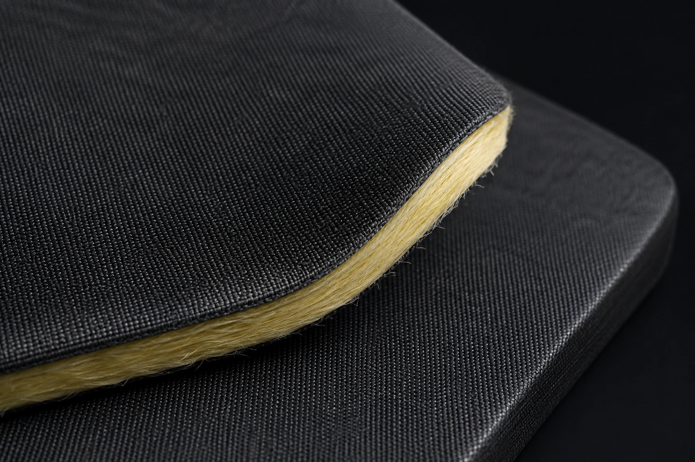
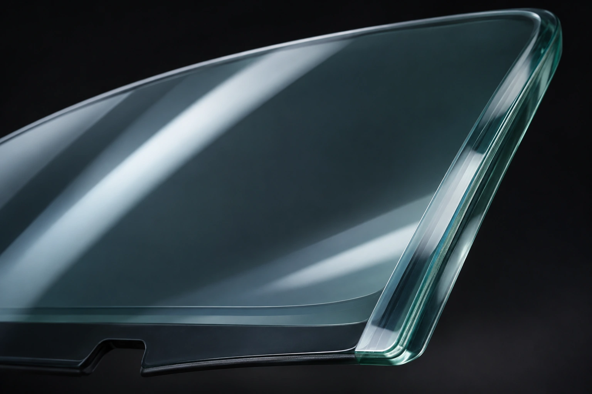
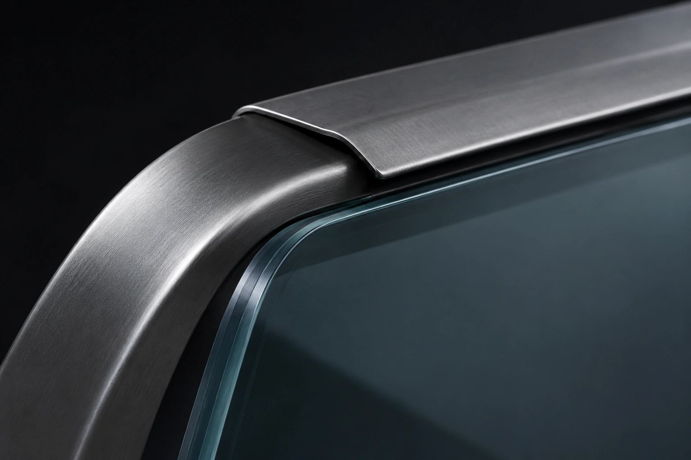
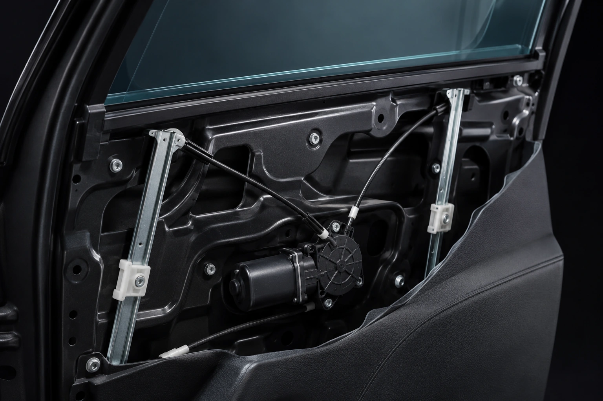
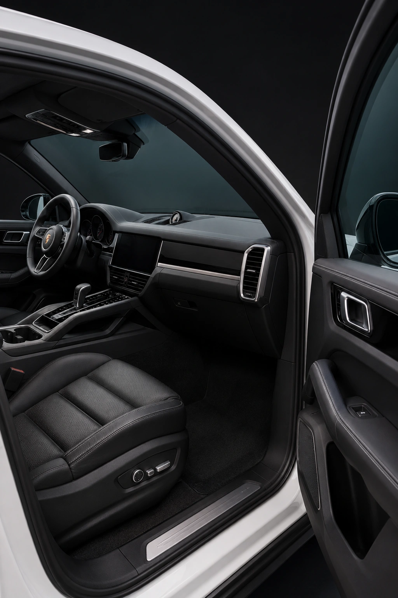

Manta de aramida
Aplicada nas áreas opacas previstas no projeto, como portas e teto. A Hi-Tech utiliza peças moldadas conforme a região a ser protegida, com atenção à cobertura e às uniões entre materiais.

Blindagem automotiva nível III-A com materiais balísticos, aplicação criteriosa e atenção às características de cada veículo.
Solicitar orçamentoA blindagem envolve diferentes materiais e regiões do veículo. Partes opacas, vidros e pontos de união precisam ser considerados como um conjunto, com atenção à aplicação e à continuidade da proteção.
A Hi-Tech combina mantas de aramida, vidros balísticos e componentes de aço nos locais previstos para cada projeto. A escolha dos materiais, as sobreposições e os reforços seguem as especificações técnicas do veículo e do sistema de blindagem.
Nosso processo reúne treinamento da equipe, investimento em equipamentos e inspeções de qualidade. O objetivo é integrar proteção, funcionamento e acabamento ao uso diário do carro.

Da proteção das áreas opacas ao cuidado com os mecanismos, cada elemento tem uma função no conjunto.

Os painéis são moldados para as áreas opacas previstas no projeto. A vista separada ajuda a entender a relação entre a carroceria, o painel balístico e o acabamento interno.
Cada veículo exige atenção às áreas de aplicação e aos encontros entre os materiais. A equipe define o conjunto conforme as particularidades do projeto.

Aplicada nas áreas opacas previstas no projeto, como portas e teto. A Hi-Tech utiliza peças moldadas conforme a região a ser protegida, com atenção à cobertura e às uniões entre materiais.

Combinam camadas de vidro e polímeros para compor a proteção das áreas transparentes. As especificações, o funcionamento dos mecanismos e a compatibilidade com recursos do veículo são avaliados conforme o projeto.

Utilizados em pontos que exigem proteção específica e na união entre materiais. O overlap cria a sobreposição entre a proteção dos vidros e das partes opacas.

Mecanismos dos vidros, componentes de sustentação e ajustes de montagem recebem atenção para lidar com as características do conjunto blindado. Os acabamentos são remontados e inspecionados.

Aramida e Tensylon são materiais diferentes. A Hi-Tech apresenta soluções com aramida e também anuncia aplicações com Tensylon. A equipe confirma a combinação de materiais e a disponibilidade para o seu modelo.
O projeto também considera regiões como colunas, maçanetas e fechaduras, painel frontal e tanque, conforme a aplicação técnica. Intercomunicadores permitem a comunicação com o exterior sem abrir os vidros. Teto solar, sensores e recursos eletrônicos dependem de avaliação específica para cada modelo.
As opções de proteção para pneus e rodas também são avaliadas conforme a configuração do veículo. A equipe orienta a compatibilidade, as condições de uso e as alternativas disponíveis para seu projeto.

Conhecemos o veículo, alinhamos a proposta e orientamos os documentos necessários para iniciar o processo.

Desmontagem cuidadosa, instalação dos materiais balísticos, execução dos reforços e remontagem dos acabamentos.

Avaliação de funcionamento, acabamento, ruídos e estanqueidade antes da liberação do veículo.

Apresentação dos cuidados de uso, das condições de garantia e do plano de revisões do projeto.

Ao final da instalação dos materiais, o veículo passa por verificações que avaliam o conjunto montado.

O prazo médio de referência da Hi-Tech é de 30 dias a partir da entrada do veículo na fábrica. O desenvolvimento de vidros e as especificações do modelo podem alterar esse período.
O prazo aplicável é confirmado com nossa equipe na proposta, considerando o veículo, os materiais e a documentação do processo.

Materiais balísticos, vidros e serviços podem ter coberturas diferentes. A proposta e os documentos de entrega detalham os prazos e as condições do seu projeto.
As revisões ajudam a conservar o funcionamento da blindagem. Siga o plano entregue com o veículo e mantenha o acompanhamento da assistência.
Conheça a assistência técnica ↗Informe marca, modelo e ano. A equipe Hi-Tech apresenta as opções de blindagem para você.